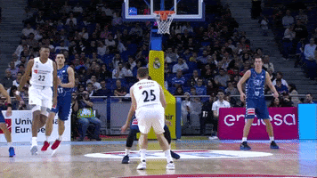
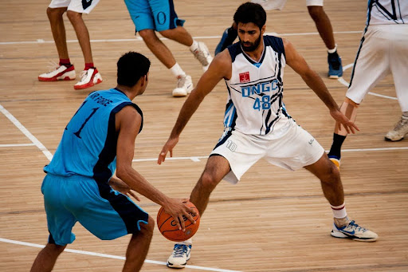
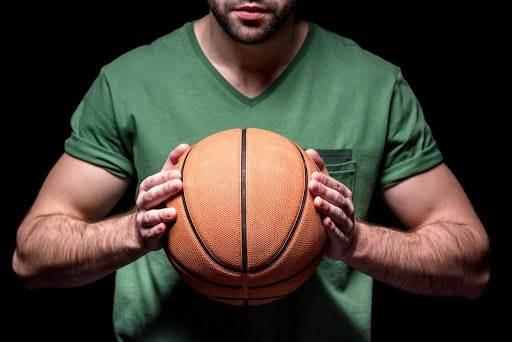
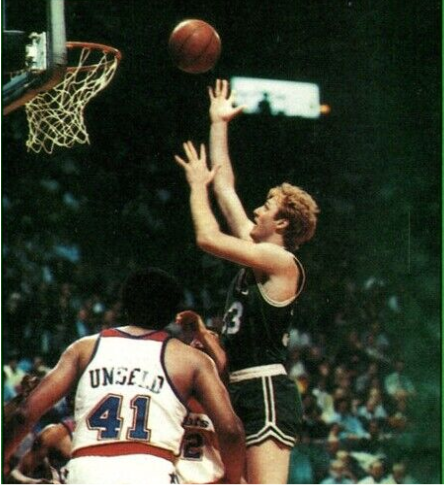
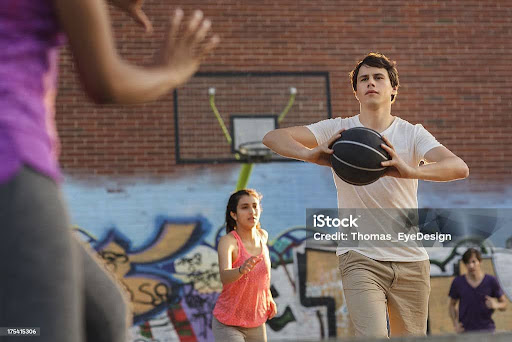
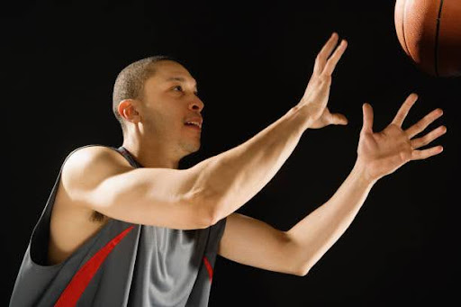
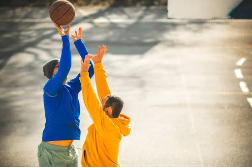
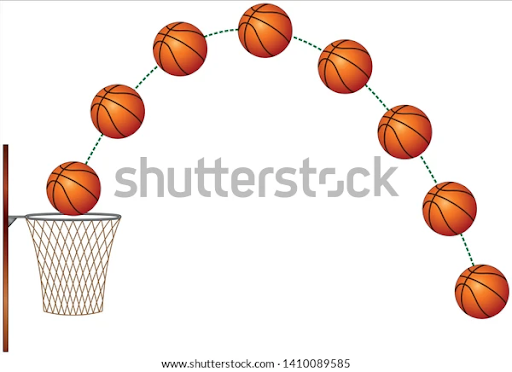
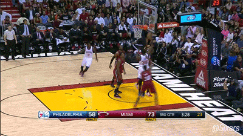

¿Cómo se anota un punto?

Los puntos se pueden anotar de diferentes maneras, como tiros de campo o tiros de cerca (dos puntos), tiros de tres puntos (tres puntos si el tiro se realiza detrás de la línea de tiro libre y por lo tanto la de dos), y tiros libres (un punto cada uno tras una falta)
- Posición básica

- Agarre del balón

- Bote
Liderazgo es pelear por un balón perdido, tener a todo el mundo involucrado, a todos los otros jugadores. Es ser capaz de asumir y delegar. Esa es la única manera en la que puedes obtener el respeto de tus compañeros. Es lograr que todos crean en ti y siempre ofrezcas lo mejor de ti mismo.
- Larry Bird

- Pase

- Recepción

La captura exitosa de un balón en baloncesto depende de la coordinación entre el que pasa y el que recibe. Un buen pase debe llegar de manera precisa a las manos del receptor, sin ser demasiado alto, bajo o desviado.
La posición de los jugadores y la defensa influyen en cómo se realiza y recibe el pase. En zonas sin presión, el receptor avanza con brazos y dedos preparados; bajo presión, puede retroceder o usar una mano para recibir.
A continuación, aquí van algunas sugerencias para incrementar las probabilidades de una captura exitosa del balón:
- Rebote

La técnica del rebote en baloncesto es esencial para ganar posesión después de un tiro fallido. La habilidad para capturar un rebote se basa en la anticipación y la posición del jugador. Un buen rebotero debe colocarse correctamente bajo el aro, listo para saltar en el momento adecuado.
A continuación, aquí van algunas sugerencias para incrementar las probabilidades de una excelencia en el rebote del balón:


INDICE BASQUET